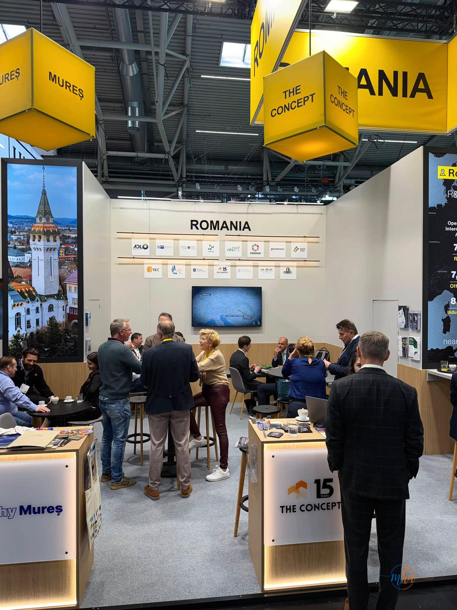
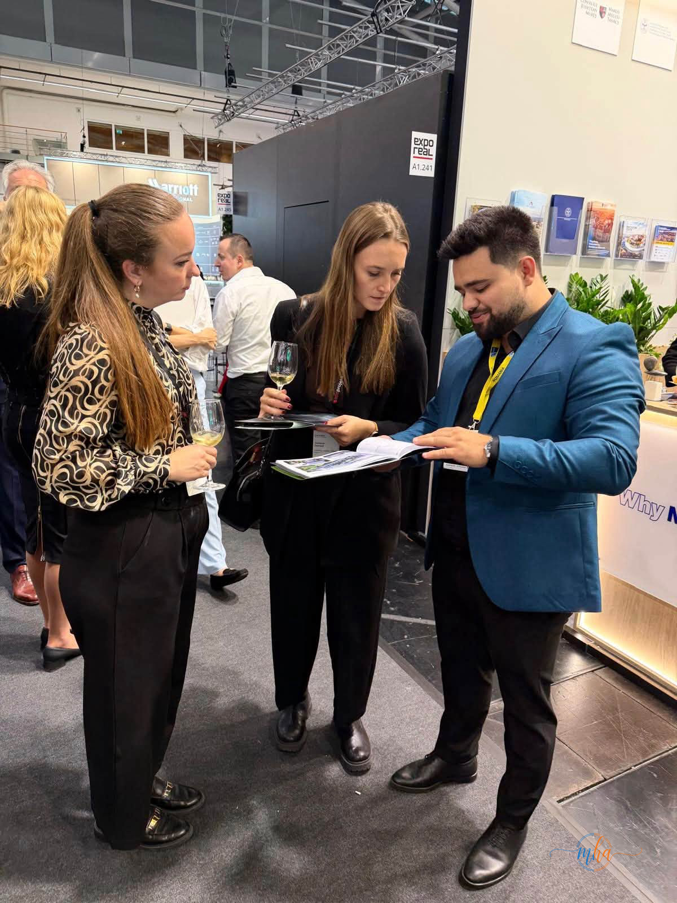
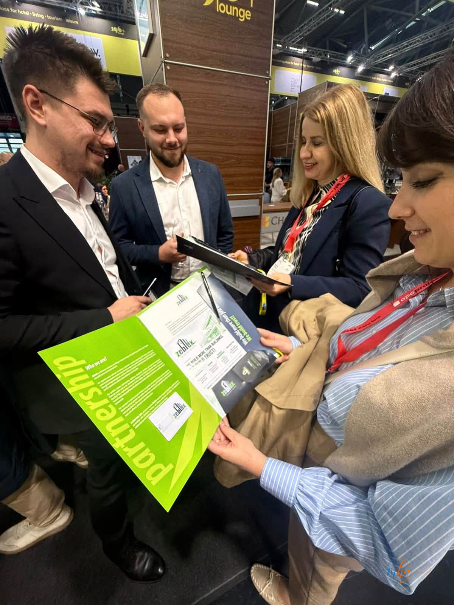
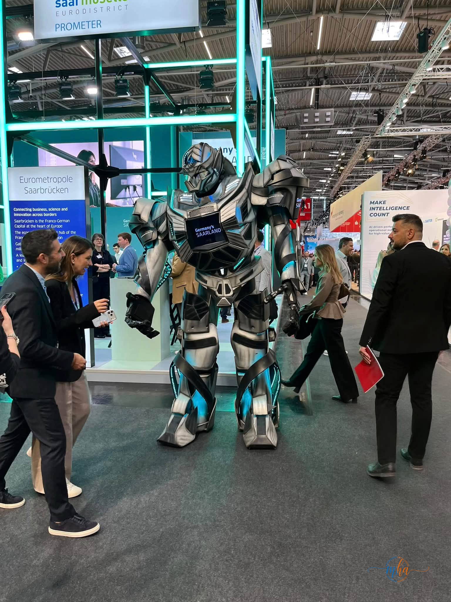
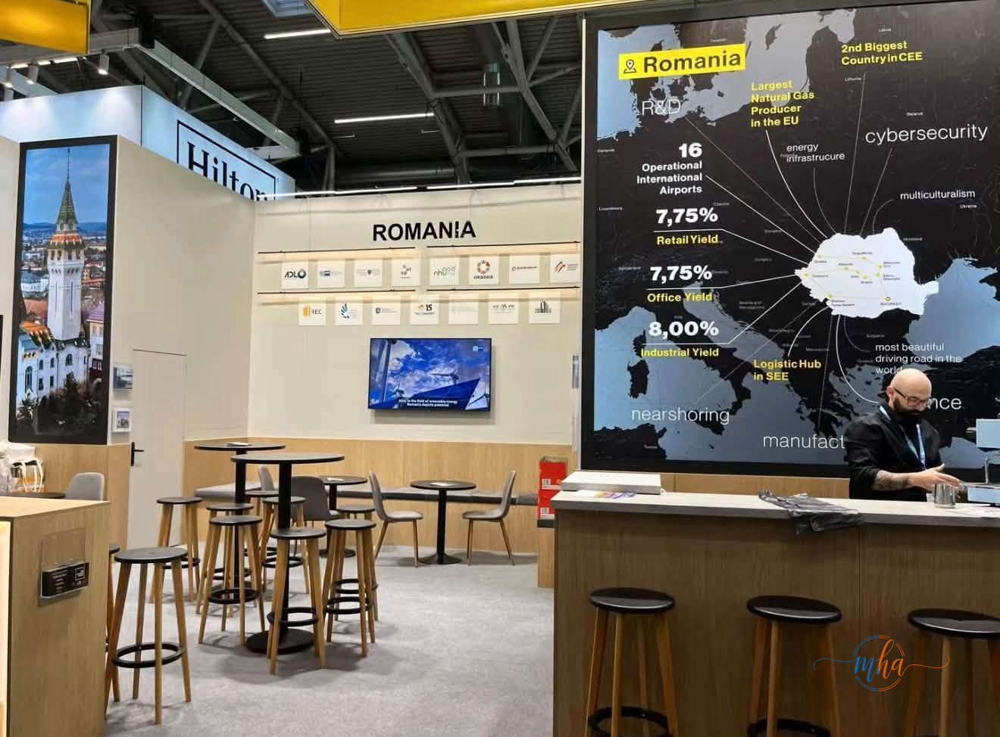
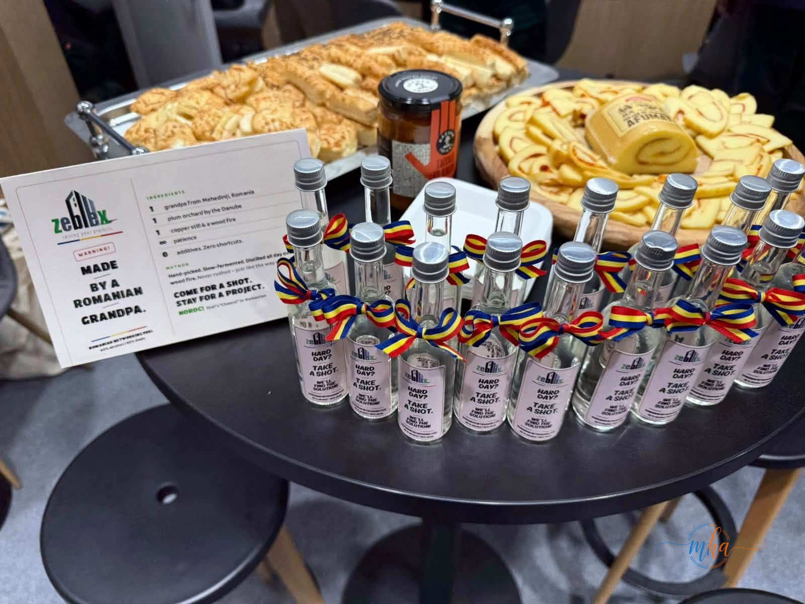

MÜNCHEN, GERMANIA – Echipa ZEBLEX a participat, în perioada 5–7 octombrie 2026, la EXPO REAL, unul dintre cele mai importante evenimente europene dedicate sectorului imobiliar, investițiilor și infrastructurii. Compania din Mehedinți a fost prezentă în pavilionul României, alături de alte firme, instituții și organizații românești. Participarea a fost o ocazie de a discuta cu dezvoltatori, investitori și profesioniști din mai multe țări și de a găsi noi direcții de colaborare.
Trei zile de întâlniri și discuții despre viitorul pieței
EXPO REAL 2026, desfășurat la München, a reunit companii și organizații din dezvoltare imobiliară, investiții, construcții, infrastructură și servicii conexe.
Pentru echipa ZEBLEX, cele trei zile de eveniment au însemnat întâlniri, discuții și schimburi de idei cu profesioniști din Europa și din alte regiuni.
Un astfel de eveniment le permite companiilor să urmărească evoluțiile pieței, să descopere proiecte noi și să vadă din timp tendințele care vor influența construcțiile și dezvoltarea imobiliară în perioada următoare.

Pavilionul României la EXPO REAL 2026. Logo-ul ZEBLEX apare alături de cele ale celorlalte companii și organizații românești prezente la München.
ZEBLEX își consolidează conexiunile din industrie
Prezența la EXPO REAL 2026 vine din preocuparea ZEBLEX de a rămâne conectată la ce se întâmplă în piață și de a construi relații profesionale pe termen lung.
La eveniment, reprezentanții companiei au stat de vorbă cu dezvoltatori, investitori și specialiști din industrie. Aceste discuții pot deschide drumul spre colaborări și proiecte noi.
Proiectele de infrastructură și dezvoltare imobiliară implică mulți parteneri: dezvoltatori, finanțatori, proiectanți, constructori și autorități. De aceea, participarea la evenimente internaționale de profil este un instrument important pentru a încheia parteneriate și a găsi noi oportunități de business.

Discuții la standul României: reprezentanții ZEBLEX au prezentat compania și proiectele ei vizitatorilor târgului.

Mapa de parteneriat ZEBLEX, „We build more than buildings. We build trust!”, prezentată profesioniștilor din industrie.
EXPO REAL, un punct important de întâlnire pentru industria imobiliară
EXPO REAL este unul dintre cele mai mari evenimente ale industriei europene de real estate. În fiecare an, târgul aduce împreună companii, investitori, dezvoltatori, instituții și profesioniști interesați de piața imobiliară și de proiectele care vor influența dezvoltarea orașelor și regiunilor.
Pe lângă prezentarea proiectelor și a oportunităților de investiții, evenimentul este un loc de networking și de schimb de informații despre tendințele din domeniu: digitalizare, eficiență energetică, clădiri sustenabile sau noi modele de finanțare.
Pentru firmele din construcții și din domeniile conexe, astfel de întâlniri ajută la înțelegerea direcției în care se îndreaptă piața europeană.

Atmosfera de la EXPO REAL 2026: standuri spectaculoase și mii de vizitatori din industria imobiliară europeană.
România, prezentată investitorilor internaționali
În cadrul pavilionului României a avut loc și o prezentare despre potențialul economic și imobiliar al țării, sub titlul „Why invest in Romania?” („De ce să investești în România?”). Prezentarea a vizat investitorii străini interesați de piața românească.
Pe ecranele standului au fost afișate date despre randamentele din sectoarele retail, birouri și industrial, dar și despre rolul României ca hub logistic în sud-estul Europei.

Pavilionul României la EXPO REAL 2026, cu harta care prezintă oportunitățile de investiții din țară.
Un strop de Mehedinți la München
ZEBLEX a adus la standul României și ceva din specificul local: mici sticle de țuică, prezentate cu umor drept „Romanian networking fuel” și făcute, după cum scria pe etichetă, de „un bunic din Mehedinți”, din prunii unei livezi de lângă Dunăre. Mesajul a fost pe măsură: „Come for a shot. Stay for a project.” („Vino pentru un pahar. Rămâi pentru un proiect.”).
Gestul a fost o modalitate simpatică de a promova tradițiile din Mehedinți și de a deschide discuții într-un cadru mai relaxat.

Țuică din Mehedinți, cu panglici tricolore și etichete ZEBLEX, alături de preparate tradiționale românești, oferite vizitatorilor standului.
De la întâlniri la proiectele de mâine
Pentru ZEBLEX, EXPO REAL 2026 a însemnat mai mult decât prezența la un târg internațional. Compania vrea să transforme conexiunile și informațiile adunate la München în oportunități concrete în perioada următoare.
„Astfel de evenimente înseamnă mai mult decât prezență. Înseamnă să fim conectați la piață, să construim relații solide și să privim dincolo de proiectele de astăzi”, transmit reprezentanții ZEBLEX.
Construcțiile și piața imobiliară trec acum prin transformări importante. În acest context, accesul la informații, parteneriate și perspective internaționale poate conta mult pentru proiectele viitoare.
ZEBLEX: construcții, dezvoltare și noi perspective
Participarea la EXPO REAL 2026 marchează o nouă etapă în efortul ZEBLEX de a-și extinde conexiunile profesionale și de a găsi noi oportunități pe piața europeană.
Cele trei zile petrecute la München au adus întâlniri și discuții cu profesioniști din industrie, dar și idei despre direcțiile care ar putea contribui la proiectele viitoare ale companiei.
Mesajul ZEBLEX după eveniment privește spre viitor: a construi nu înseamnă doar proiecte și infrastructură, ci și relații care pot sta la baza proiectelor de mâine.
Sursa: ZEBLEX / Redacția MehedintiAzi.ro